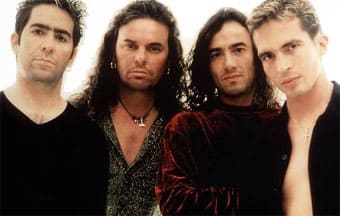

Conjunto musical mexicano, formado en la ciudad de Guadalajara, e integrado originariamente por Fher (Fernando Olvera), Juan Diego Calleros, Ulises Calleros y Abraham, un grupo amigos que se entusiasmaron por el rock a principios de los años setenta. Hacia 1976 habían creado un grupo llamado The green hat spies, con el que tocaban en fiestas y cumpleaños. En esta situación estuvieron hasta 1981, en que, fichados por Ariola, adoptaron el nombre de Sombrero verde y grabaron su primer disco.
Su segundo disco, A tiempo de Rock, se editó en Melody Discos, hasta que hacia 1985 fueron fichados por Polygram, esta vez ya con el nombre de Maná y con Alejandro González convertido en batería oficial de la banda. El primer elepé del grupo se editó en 1987 y consiguió vender casi cincuenta mil copias, una cifra respetable, pero 1988 fue un mal año para el grupo.
Tras este tropiezo volvieron a cambiar de discográfica, y esta vez se trasladaron a Warner Music, con la que lanzaron en 1989 Falta amor, el disco que supuso el espaldarazo inicial de su carrera de éxitos. Gracias al gran apoyo que recibieron de su compañía, que siempre demostró tener fe en ellos, el disco superó las setecientas cincuenta mil copias vendidas.
En 1991, después de una monumental gira con más de ciento treinta actuaciones, grabaron ¿Dónde jugarán los niños? Este nuevo larga duración de Maná representó su consagración internacional: un millón doscientos cincuenta mil ejemplares en México y más de ochocientos mil en el resto del mundo. Para este trabajo se incorporaron al grupo Iván González en los teclados y César López en la guitarra, en sustitución de Ulises, que se convirtió en manager de la banda.